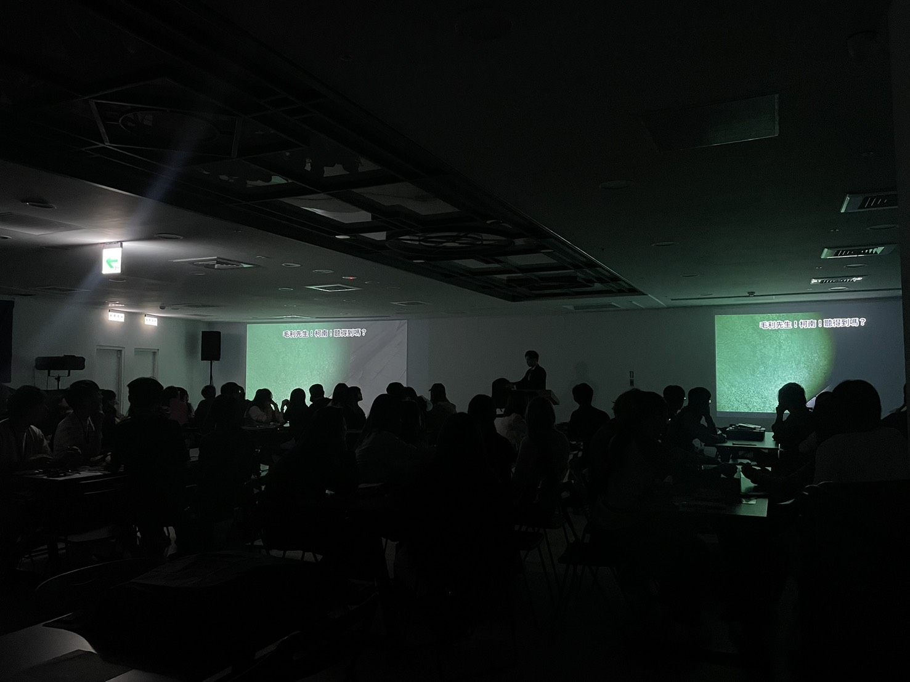

服務藍圖・大規模場域執行・動線設計
《名偵探柯南》IP 實境活動執行
服務藍圖規範百人場域動線，三情境售票模型因應跨城市差異，累計動員 7,000 名玩家。
頂級創意行銷取得日本 SCRAP 的《名偵探柯南》IP 授權，在台灣多個城市舉辦實境解謎活動。遊戲玩法由日方設定——玩家觀看演員現場演戲、使用實體道具取得線索、與工作人員互動解謎。執行細節由我們主導。
活動場地因城市而異，涵蓋大型會議室、文化創意園倉庫、學校大禮堂等不同空間類型，同時最多 100 人在場。
這類沉浸式實境活動在台灣尚未普及，票價偏高，玩家對體驗值的期待更高。大規模執行面臨兩個核心挑戰：
玩家在遊戲進行中會在不同時間點進入不同小房間取得線索。若進出動線設計不當，會造成排隊擁擠；若小房間位置過近玩家座位，房間內的互動聲音可能被外部玩家聽到而提早暴雷。
玩家分散坐在不同位置觀看演員表演，需要確保每個座位都能完整看到關鍵演出，沒有被遮擋的死角。
以手繪方式建立服務藍圖，規範在不同時間序下的：
藍圖讓多場次、不同場地的執行有統一參照標準，降低現場臨時判斷的風險。
以台北與台中的歷史售票數據為基礎，建立三種情境模型：
| 情境 | 說明 | 對應策略 |
|---|---|---|
| 悲觀 | 售票率低於去年同期 | 縮減備案資源、加強現場促銷 |
| 持平 | 與去年同期相近 | 維持標準配置 |
| 樂觀 | 售票率高於去年同期 | 擴充人力、備援場次 |
赴日本考察現場執行方式，回台後制定 SOP，作為面試標準與培訓教材。由於票價門檻較高，工作人員提供的情緒價值是影響體驗滿意度的關鍵變數。

活動現場